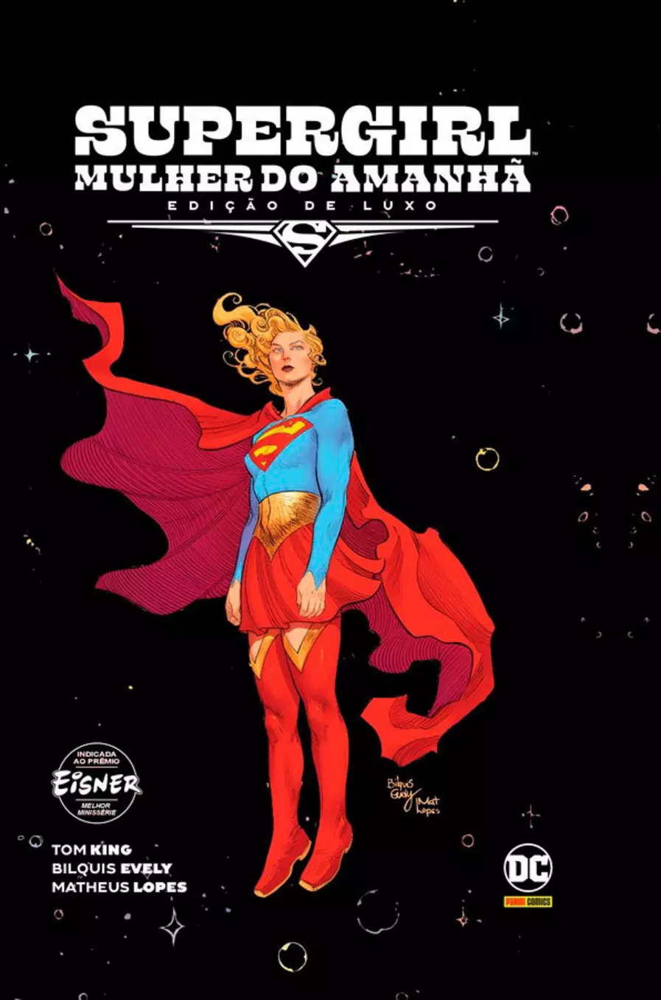

Supergirl: Mulher Do Amanhã
Estado do Quadrinho:
Lacrado
Formato de Capa:
Capa Dura
Editora:
DC Comics
Autor:
Bilquis Evely
Ilustrador:
Tom King
Data da primeira publicação:
26 de junho de 2021
Kara Zor-El, a Supergirl, já vivenciou muitas aventuras épicas ao longo dos anos. Porém, nos últimos tempos, ela está passando por uma crise em relação ao seu propósito no mundo. Ela é uma jovem que, depois de ter visto seu planeta ser destruído, foi enviada à Terra para proteger e ajudar o seu primo bebê; contudo, no fim das contas, ele acabou nem precisando dela. Na verdade, aonde quer que ela vá em seu mundo adotivo, as pessoas a veem só como a prima do Superman. Mas a rotina de Kara está prestes a virar de cabeça para baixo. Ao se deparar com uma garota alienígena que busca vingança pelo assassinato de seu pai, a Supergirl se verá obrigada a repensar as suas convicções para ajudar a menina. É então que uma kryptoniana e uma criança furiosa embarcam numa jornada perigosa no melhor estilo espada e feitiçaria espacial que irá mudar a vida de ambas para sempre!
Escrita pelo aclamado roteirista Tom King, com arte da brilhante artista brasileira Bilquis Evely e com cores do talentoso colorista brasileiro Mat Lopes, a obra foi indicada ao Prêmio Eisner de melhor minissérie. Esta Edição de Luxo reúne a minissérie completa em oito edições e traz um texto de introdução inédito de Tom King, uma arte de capa nova de Bilquis Evely, um roteiro alternativo nunca antes publicado da edição 6 e uma galeria de arte de Evely.
Comprar